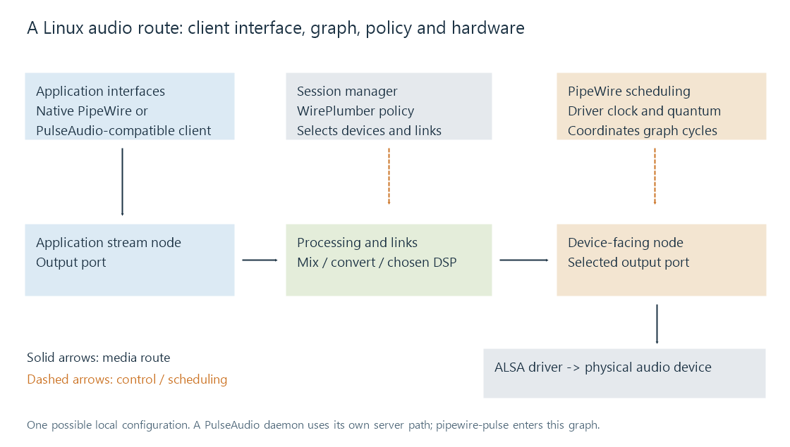

PipeWire
PipeWire routes media through a scheduled graph of nodes, ports, and links, with session policy and compatibility interfaces around that graph.
PipeWire organizes audio and other media as a processing graph. Applications and devices produce or consume buffers; links carry those buffers between their ports. A separate session manager decides how available devices and streams should be configured and connected.
This distinction is useful when a Linux player produces audio but it reaches the wrong output: the processing system may be running correctly while the selected route differs from the intended one.

The diagram shows one possible local audio configuration. A remote Emby server delivers media to the client app before this local output graph; it is not automatically a node in that client's graph.
Nodes, ports, links and policy
A node performs or hosts media processing. A port is one of its inputs or outputs. A link connects an output port to an input port. The graph can represent application streams, processing stages and device-facing nodes.
A session manager such as WirePlumber handles policy: selecting device profiles, remembering or choosing targets and creating appropriate connections. The PipeWire daemon coordinates the graph's processing.
Consequently, a node can exist without being connected to the intended speakers. A connection can also change when a device appears or disappears. Selecting a default device and observing the links of an already-running stream are related but distinct tasks.
Quantum is the amount processed in a graph cycle
The graph's rate describes its sample clock. Its quantum describes the number of sample frames processed per cycle.
For a chosen quantum of 256 frames at 48 kHz:
cycle duration = 256 / 48,000 ≈ 5.333 ms
cycles per second = 48,000 / 256 = 187.5
| Example quantum at 48 kHz | Nominal cycle duration |
|---|---|
| 128 frames | 2.667 ms |
| 256 frames | 5.333 ms |
| 512 frames | 10.667 ms |
These are examples, not distribution defaults. Reducing the quantum gives the system shorter processing intervals and more frequent scheduling work. It does not change the pitch or duration of correctly delivered audio.
The complete audible delay can include client queues, adapters, graph processing, device buffers and a wireless output. A 5.333 ms cycle is therefore not a claim of 5.333 ms total latency.
Node latency preferences can influence configuration, while device requirements, active clients or forced settings can determine another result. The observed rate and quantum describe the running graph more accurately than a requested value in one application.
A driver starts cycles; another clock can drift
A graph driver starts processing cycles and supplies timing information. A device-backed driver can be paced by a physical audio clock, while timestamps are related to the system's monotonic time.
Suppose a USB device's nominal 48 kHz clock runs 100 ppm fast. It consumes 4.8 additional frames per second relative to an exact 48,000-frame clock. Buffering absorbs short differences, but a persistent difference accumulates.
The graph needs a consistent strategy for relating those clocks. Rate matching and timing compensation at appropriate boundaries keep a queue from growing or emptying indefinitely. A “48 kHz” format label gives the nominal rate; it does not prove that two independent oscillators advance identically.
For a movie, the player also relates this output timing to picture presentation. Graph processing that meets every deadline can still require an accurate downstream-delay estimate for lip sync.
Existing APIs can enter the same graph
A native PipeWire client can create a stream directly. A PulseAudio client can connect through pipewire-pulse. Compatibility support can also expose routes to applications using other audio interfaces.
Those interfaces identify how the application communicates, while the running server and graph identify what processes the audio. ALSA remains important as a Linux hardware interface beneath many device nodes. These are layers in a route rather than mutually exclusive labels for the whole machine.
Two concrete failures illustrate the distinction. A stream linked to the laptop speakers can play continuously while the listener expects the USB interface: its route is wrong. A stream linked to the correct USB interface can break up when a processing deadline is missed: its timing failed. Changing the default target addresses the first kind of problem only if policy reconnects that stream; changing the quantum addresses the second only if the revised scheduling and buffering meet the deadline.